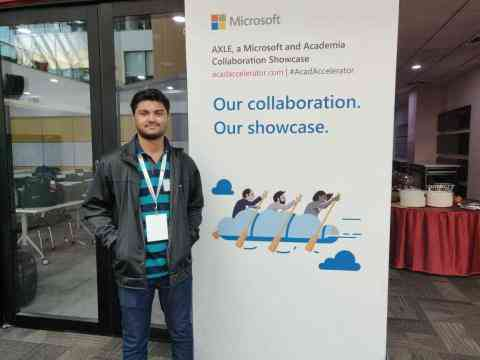

Here in FARC, we believe that it is not a club that defines it's members but rather the members that define their club. We encourage our members to take part in any competition they find and give them maximum support and guidance to make sure their success.
-
Shivam Mahesh Potdar
Google Summer of Code, 5 May 2020
GSoC 2020 @ FOSSi Foundation
Shivam Potdar, EEE Department qualified for Google Summer of Code (GSoC) 2020 with a project titled "Integration of WARP-V with OpenPiton" under the Free and Open Source Silicon Foundation (FOSSi). Shivam's work would be sponsored by Google with a stipend of $3000 and released as an open-source project .
Read More -
Nishant Kumar
Codefundo 2018, 9 April 2018Runner's Up with Rs 7,000 cash prize (CodeFunDo 18), Winner with Rs 20,000 cash prize (CodeFunDo 19).
Code.Fun.Do is a Microsoft sponsored hackathon requiring student teams to come up with an application prototype in 24 hours. The complete program is spread over the entire weekend involving workshops, coding, and demos followed by results and prize distribution.
-
Shivam Mahesh Potdar
Coding Hackathon 2k18, 18 September 2018
First postion with ₹10000 cash prize
Shivam Potdar participated in Coding Hackathon 2k18 organized by the IoT Club, NMAMIT Nitte, supported by Karnataka Bank and the NAIN Government of Karnataka. He was awarded the first rank among more than 100 participants with a cash prize of Rs 10000 and a certificate of appreciation.
-
Ajethesh Kumar
Exide Life Insurance Quiz, 6 Feb 2016
Bangalore city winner and ₹20,000 cash prize
Junior Finance Guru is a one-of-its kind program for school going children by Exide Life Insurance Company Limited, an established Life Insurance Company in India. The program, initially launched in Jaipur and Bengaluru, received an overwhelming response with 3419 students registering for the program. These students were then screened and finally 140 made it to the City Finals. The participants were divided into two categories Bright Sparks (CLASS VI & VII) and Master Minds (CLASS VIII, IX & X). The participants were given 15 days to prepare using the course content and underwent a school level screening in the last week of January.
Read More